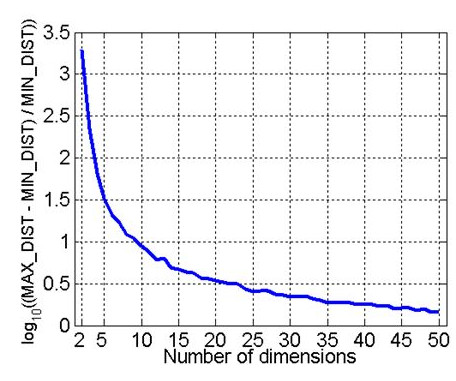
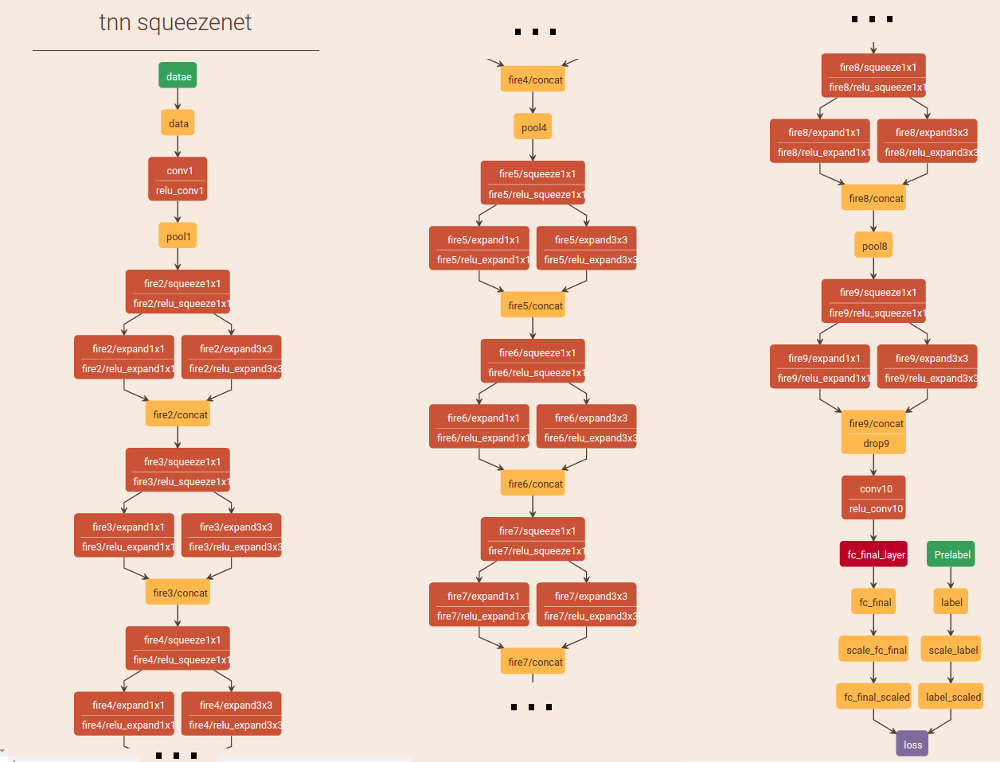
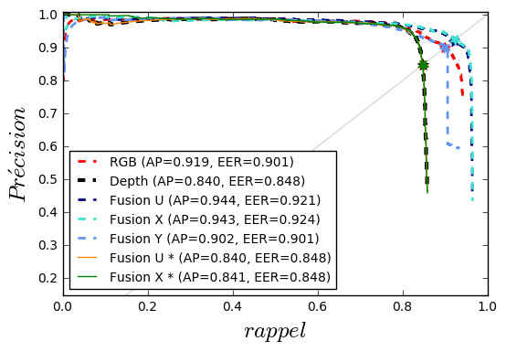
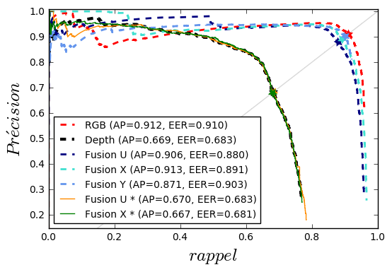

Fléau de la dimension
"Curse of dimensionality." Adaptive control processes: a guided tour. Princeton, NJ (1961). Bellman, R.
Introduction to data mining. 1st. (2005). Tan, Pang-Ning, Michael Steinbach, and Vipin Kumar.
Pour chaque nombre de dimensions :
- 500 points générés aléatoirement
- Calcul de : $log_{10} \left( \frac{distance_{max}-distance_{min}}{distance_{min}} \right)$
| En dimension 2 : | $distance_{max}\approx$ 2500 $distance_{min}$ |
| En dimension 50 : | $distance_{max}\approx$ 3 $distance_{min}$ |
Nicosie(Chypre) -> Reykyavik(Islande) : 4873km
Viennes(Autriche) -> Bratislava(Slovaquie) : 55km
Ratio : 100 (89)
Nicosie : 111 km²
Reykyavik : Superficie 274 km²
Vienne : Superficie 415 km²
Bratislava : Superficie 368 km²
Viennes(Autriche) -> Bratislava(Slovaquie) : 55km
Ratio : 100 (89)
Nicosie : 111 km²
Reykyavik : Superficie 274 km²
Vienne : Superficie 415 km²
Bratislava : Superficie 368 km²
Image aléatoire
ResNet

Fonctionnement d'un écran LCD : Un écran LCD est divisé en petites unités lumineuses appelées pixels. Chaque pixel est subdivisé en trois rectangles (appelés sous-pixels) recouverts par des filtres colorés (rouge, vert ou bleu). Un tube
fluorescent (ou un panneau de D.E.L.) se trouvant derrière l'écran produit de la lumière blanche. Pour chaque sous-pixel, une couche de cristaux liquides est située entre deux polariseurs. L'ensemble laisse passer plus ou moins de lumière suivant
la tension électrique appliquée. Les pixels étant déjà très petits, l'œil ne distingue pas les sous-pixels.
Descripteurs et classification
L'apprentissage profond


personnal webpage Pr Jürgen Brauer
cnn-> decoupler l'information exemple de jouer pour enfant avec le cube dans le carré
L'apprentissage profond
http://scs.ryerson.ca/~aharley/vis/conv/flat.html Adam Harley

L'apprentissage profond

L'apprentissage profond
 Rétropropagation du gradient
Rétropropagation du gradient Filtres d'une première couche de CNN
Filtres d'une première couche de CNNhttp://xxii.fr
L'apprentissage profond
SqueezeNet

LeNet

AlexNet
courbes PR
|  |  |
| InOutDoor RGBD People | ONERA.ROOM |
LATO, conférence ECMR
SnapNet, plus de détails

3DRMS challenge

3DRMS challenge, stratégies

3DRMS challenge, résultats qualitatifs